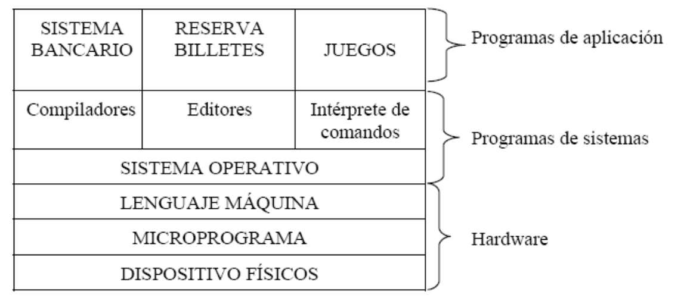

2. EL SISTEMA OPERATIVO
Un sistema operativo es un programa o conjunto de programas que actúa como intermediario entre el usuario y el
hardware del ordenador, gestionando los recursos del sistema y optimizando su uso.
El sistema operativo es en sí mismo un programa, pero un programa muy especial y quizá el más complejo e importante.
Cuando se conecta un ordenador se carga parte del Sistema Operativo en la memoria y se ejecuta. El Sistema Operativo
despierta al ordenador y hace que reconozca a la CPU, la memoria, las unidades de disco y cualquier otro dispositivo
conectado a ella como el teclado, el ratón, la impresora, etc., verificando así que no existen errores de conexión y
que todos los dispositivos se han reconocido y trabajan correctamente. A este primer diagnóstico se le denomina
POST.
El sistema operativo presenta al usuario una máquina virtual que es más fácil de manejar y programar que el hardware
que está por debajo.
El hardware se encuentra en la parte inferior, y puede estar formado a su vez por dos o más niveles:
-
Los microprogramas suelen estar situados en memoria de sólo lectura y son un conjunto de microinstrucciones que
interpreta el lenguaje máquina. Esto es, los microprogramas son software primitivo (sólo se encuentra en algunas
máquinas) que controla directamente los dispositivos físicos.
-
El lenguaje máquina es el lenguaje de bajo nivel que permite la comunicación directa con el hardware de la
computadora.
En la siguiente capa nos encontramos el Sistema Operativo, una de sus funciones es ocultar toda esta complejidad y
proporcionar al programador un juego de instrucciones más fáciles de usar.
El resto del software de sistema (compiladores, intérprete de comandos, editores...) se sitúa sobre el sistema
operativo. Estos programas no forman parte del sistema operativo, aunque normalmente, los fabricantes lo distribuyen
junto con el mismo.
El sistema operativo se ejecuta en modo privilegiado o supervisor (protege al hardware de posibles intromisiones)
mientras que el resto del software de sistema se ejecutan en modo usuario.
Por último, los programas de aplicación aparecen en el nivel superior. Estos programas resuelven problemas
específicos, como procesamiento de datos, cálculos científicos, etc.

2.1. FUNCIONES DEL SISTEMA OPERATIVO
Las funciones principales que realiza todo sistema operativo son:
-
Control de la ejecución de los programas. Acepta los trabajos, administra la manera en que se realizan, les
asigna los recursos y los conserva hasta su finalización.
-
Administración de periféricos. Coordinando y manipulando los dispositivos conectados al ordenador.
-
Gestión de permisos y de usuarios. Adjudica los permisos de acceso a los usuarios y evita que las acciones de
uno afecten al trabajo que está realizando otro.
-
Control de concurrencia. Establece prioridades cuando diferentes procesos solicitan el mismo recurso.
-
Control de errores. Gestiona los errores de hardware y la pérdida de datos.
-
Administración de memoria. Asigna memoria a los procesos y gestiona su uso.
-
Control de seguridad. Debe proporcionar seguridad tanto para los usuarios como para el software y la información
almacenada en los sistemas.
2.2. ELEMENTOS Y ESTRUCTURA DE UN SISTEMA OPERATIVO
Según las funciones anteriores, es posible analizar la estructura de un sistema operativo en cinco niveles. Los dos
primeros entrarían dentro de la parte del sistema operativo dependiente del hardware, el resto de los niveles
precedentes a la parte portable del mismo.
Cada uno de los niveles se comunica con el inmediatamente inferior y superior coordinando sus funciones.
-
Nivel 1: Gestión del Procesador. En este nivel se encuentra la parte del sistema operativo
encargada de la gestión de la CPU. En los sistemas operativos multiproceso, este nivel se encarga de compartir
la CPU entre los distintos procesos realizando funciones de sincronización y conmutación de la CPU, gestión de
interrupciones y manejo de condiciones de error.
-
Nivel 2: Gestión de Memoria. Este nivel es el encargado de repartir la memoria disponible entre
los procesos. Se realizan funciones de asignación y liberación de memoria, y el control de violación de acceso a
zonas de memoria no permitidas.
-
Nivel 3: Gestión de Procesos. Este nivel es el encargado de la creación y destrucción de los
procesos, intercambio de mensajes y detección y arranque de los mismos.
-
Nivel 4: Gestión de Dispositivos. En este nivel se realiza la gestión de las entradas/salidas
(E/S) en función de los dispositivos existentes. Entre otras, se encarga de las funciones de creación de
procesos de E/S, asignación y liberación de dispositivos E/S, y planificación de la E/S.
-
Nivel 5: Gestión de la Información. El objetivo de este nivel es el de gestionar el espacio de
nombres lógicos, utilizados para simplificar el acceso a los recursos, ya que mediante estos se sustituyen rutas
de acceso que pueden ser muy largas y difíciles de recordar por un solo nombre, encargándose el sistema
operativo, de forma totalmente transparente para el usuario, de realizar esa búsqueda de ruta. Otro de sus
cometidos es la protección de la información realizando funciones de creación y destrucción de ficheros y
directorios, apertura y cierre de ficheros, lectura y escritura de ficheros, y protección de acceso.
Es importante destacar que un mismo sistema operativo puede trabajar en múltiples plataformas hardware, por lo que
debe poder adaptarse a las peculiaridades de cada una de ellas.
2.3. UTILIZACIÓN DEL SISTEMA OPERATIVO
Se puede utilizar el sistema operativo de dos maneras distintas:
-
El modo orden o modo comando es la interacción del usuario y el sistema operativo a través de una línea de
comandos.
-
El modo gráfico es aquella interfaz que utilice ventanas, iconos y ratón. El uso de un entorno gráfico en un
equipo servidor se puede considerar un gasto innecesario de recursos.